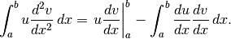

1. Set up¶
Here is the sample documentation chapter.
1.1. Sphinx update¶
sudo apt-get install texlive-latex-base
sudo apt-get install texlive-latex-recommended
sudo apt-get install texlive-fonts-recommended
sudo apt-get install texlive-latex-extra
sudo apt-get install texlive-lang-polish
sudo apt-get install dvipng
sudo apt-get install xzdec
tlmgr init-usertree
tlmgr install titlesec
tlmgr install framed
tlmgr install threeparttable
tlmgr install wrapfig
tlmgr install upquote
tlmgr install multirow
1.2. Code block¶
#include <stdio.h>
#include <stdlib.h>
int main(int argc, char** argv) {
printf("Hello, World!\n");
return EXIT_SUCCESS;
}
1.3. Mathematical formula¶

can be created with the following:
.. math::
\int_a^bu\frac{d^2v}{dx^2}\,dx
=\left.u\frac{dv}{dx}\right|_a^b
-\int_a^b\frac{du}{dx}\frac{dv}{dx}\,dx.
1.4. Set up Cloud9 environment¶
$ sudo vim /etc/apache2/sites-enabled/001-cloud9.conf
$ apachectl restart
1.5. Useful commands¶
1.5.1. Apache commands¶
$ apachectl start
$ apachectl restart
$ apachectl stop
MySQL Database console access
$ mysql-ctl cli
PostreSQL Database console access
$ sudo sudo -u postgres psql
CREATE USER root SUPERUSER PASSWORD 'pass';
MySQL server commands
$ mysql-ctl start
PostgreSQL server commands
$ sudo service postgresql start